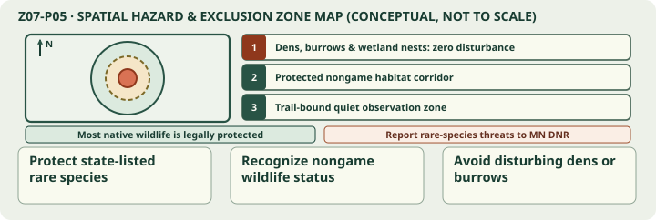

Z07-P05 · Traps and snares · New manuscript
State Protected Nongame and Rare Species Exclusions
Highlight Minnesota state-listed rare species and protected nongame wildlife vulnerable to unselective capture hazards.
When it applies · All Minnesota forests, wetlands, lakeshores, and prairies.
Equipment · MN DNR Rare Species Guide and Nongame Wildlife reference.

Actions
- Recognize that state-listed endangered, threatened, and special-concern species—alongside almost all native nongame mammals, birds, reptiles, and amphibians—are legally protected from capture or harm.[L04, L05]
- Understand why unselective ground or shoreline devices disproportionately harm non-target animals such as turtles, martens, fishers, spotted skunks, and wading birds.[L02, L04, L05]
- Observe wildlife strictly from non-intrusive distances and avoid disturbing burrows, tree cavities, brushpiles, and wetland nesting margins.[L04, L05, L13]
Failure recognition · Assuming only large charismatic animals are protected overlooks dozens of vulnerable state-listed nongame species.[L04, L05]
Verify · Protected nongame status and den/habitat non-disturbance rules are honored across all field travel.[L04, L05]
Stop or change course · Stop approaching burrows, dens, or nesting areas whenever wildlife alarm or defensive cues appear.[L04, L05]
Evidence and editorial notes
- L02 · Association of Fish & Wildlife Agencies · Best Management Practices for Trapping and Furbearer Welfare (Current web edition)
- Section: AFWA Best Management Practices for animal welfare and selectivity · Conditions: Evaluating trapping principles, welfare, and non-target risk
Support: AFWA BMPs evaluate regulated devices on animal welfare, efficiency, selectivity, user safety, and practicality through scientific testing.
Limitations: Improvised traps and snares lack scientific welfare testing and selectivity controls, causing severe injury and non-target capture. · Conflicting evidence: None noted.
Editorial note: Anchors Z07 welfare & conceptual classification without building instructions. · Specialist reviewer: Wildlife welfare scientist
Primary source · checked 2026-11-25 - L04 · Minnesota DNR · Minnesota Endangered, Threatened, and Special Concern Species (Current web edition)
- Section: State endangered, threatened, and special-concern species · Conditions: Habitats supporting state-listed mammals, birds, reptiles, and amphibians
Support: Unselective devices endanger state-listed species including raptors, mustelids, and turtles.
Limitations: Verify protected-species distribution and never disturb protected habitats or dens. · Conflicting evidence: None noted.
Editorial note: Protects state-listed nongame species. · Specialist reviewer: Conservation biologist
Primary source · checked 2026-11-25 - L05 · Minnesota DNR · Nongame Wildlife Program and Protected Species (Current web edition)
- Section: Nongame wildlife protection and ecological role · Conditions: Non-harvested wildlife across forests, wetlands, and prairies
Support: Most wild mammals, songbirds, raptors, and reptiles are legally protected nongame species that may not be captured or killed.
Limitations: Ecological stewardship prioritizes observation and avoidance over capture. · Conflicting evidence: None noted.
Editorial note: Frames Z07 ecological ethics. · Specialist reviewer: Nongame wildlife biologist
Primary source · checked 2026-11-25 - L13 · Minnesota DNR · Scientific and Natural Areas Visitor Rules and Prohibitions (Current web edition)
- Section: Zero-disturbance scientific preserve ethics · Conditions: Sensitive habitats, wetlands, and rare-species corridors
Support: Natural-area conservation prohibits altering vegetation, digging pits, or leaving wire/cordage debris that entangles wildlife indefinitely.
Limitations: Abandoned wire or monofilament creates persistent ghost-entanglement hazards. · Conflicting evidence: None noted.
Editorial note: Addresses ghost-gear and environmental restriction. · Specialist reviewer: Conservation ecologist
Primary source · checked 2026-11-25
Source lineage · New manuscript (Z07 P18 species protection) · Classification · New manuscript.